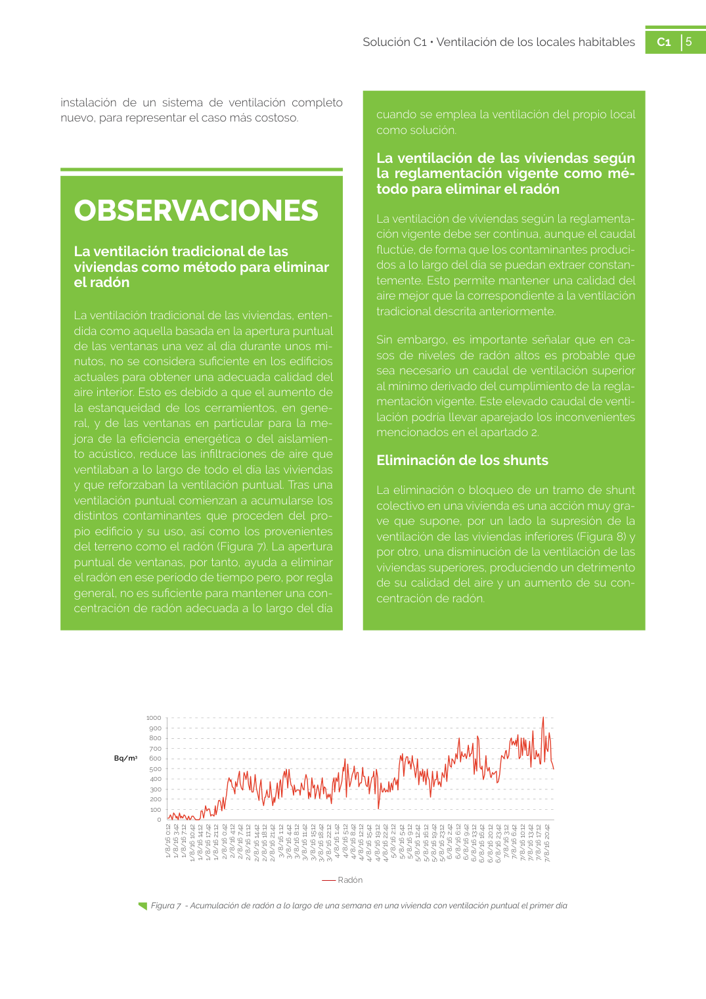

Solucion C1 Ventilacion de los locales habitables · edición sin-fecha · capa guia
Documento GUIA-PDF-58ad6aa65696 · SHA-256 del PDF 8e711eace63c8ecfb73b727641d2918bf2380b10b975ba2b876b361f1b4479e8
Página física 5 de 7.
Copia fiel del PDF fuente · Fuente oficial
Ficha de la disposición en la fuente oficial
Créditos y autoría en el PDF fuente. Reproducción con cita de fuente y autores.
Permiso literal: Se permite la reproducción total o parcial del contenido de este do Edición actual: septiembre 2020 cumento siempre y cuando se cite la fuente original y a sus autores.
Solución C1 • Ventilación de los locales habitables C1 77
Este documento ha sido elaborado por el Instituto de ciencias
de la construcción Eduardo Torroja (IETcc) bajo la supervisión
de la Dirección General de Agenda Urbana y Arquitectura del
Ministerio de Transportes, Movilidad y Agenda Urbana (MITMA).
SECRETARÍA GENERAL DE
AGENDA URBANA Y VIVIENDA MINISTERIO GOBIERNO El IETcc, perteneciente al Consejo Superior de Investigaciones DE TRANSPORTES, MOVILIDAD
DE ESPAÑA Y AGENDA URBANA DIRECCIÓN GENERAL DE
AGENDA URBANA Y ARQUITECTURA Científicas (CSIC), es el centro de investigación en edificación
de referencia en España. La Unidad de Calidad en la Construc
ción del IETcc asesora al MITMA en la elaboración del Código
MINISTERIO GOBIERNO DE CIENCIA Técnico de la Edificación que, desde el año 2019, cuenta con la DE ESPAÑA E INNOVACIÓN
sección HS6 Protección frente a la exposición al radón.
Dirección y Coordinación:
Ministerio de Transportes, Movilidad y Agenda Urbana
Esta ficha forma parte de una serie de documentos englobados Isabel Marcos Anasagasti
en una misma publicación, cuyo objetivo es constituir una he Raquel Lara Campos
rramienta de ayuda para el diseño de soluciones de protección Eduardo González de Prado
frente al radón: Instituto de ciencias de la construcción Eduardo Torroja CSIC
Pilar Linares Alemparte
■ Guía de rehabilitación frente al radón
Fichas de soluciones: Autoras:
Sonia García Ortega
A: De aislamiento del edificio Pilar Linares Alemparte
■ Solución A1. Barrera frente al radón
■ Solución A1-1. Barrera frente al radón. Encuentros Colaboradoras:
■ Solución A2. Sellado de fisuras, grietas, encuentros y juntas Virginia Sánchez Ramos
■ Solución A3. Puertas estancas Karina Angélica García Pardo
■ Solución A4. Creación de sobrepresión
Edita:
B: De reducción del radón antes de que penetre en los locales Centro de Publicaciones Secretaría General Técnica
a proteger Ministerio de Transportes, Movilidad y Agenda Urbana©
■ Solución B1. Ventilación del espacio de contención: cá Entidad colaboradora:
mara de aire Consejo Superior de Investigaciones Científicas · CSIC
■ Solución B2. Ventilación del espacio de contención: loca Ministerio de Ciencia e Innovación
les no habitables
■ Solución B3. Despresurización del terreno Catálogo de publicaciones de la Administración General
del Estado: publicacionesoficiales.boe.es
C: De reducción del radón tras penetrar en los locales a proteger
■ Solución C1. Ventilación de los locales habitables Centro virtual de publicaciones del Ministerio de Transpor
tes, Movilidad y Agenda Urbana: www.mitma.gob.es
Fichas de ejemplos:
Página web del Código Técnico de la Edificación:
■ Ejemplo A1+B3. Barrera frente al radón + despresurización www.codigotecnico.org
con red de tubos
■ Ejemplo A2+B1. Sellado + ventilación de la cámara sanitaria Maquetación y diseño gráfico:
■ Ejemplo A2+B3. Sellado + despresurización con red de tubos Lapizmente. Estrategia • Diseño Gráfico
■ Ejemplo A2+C1. Sellado + ventilación mecánica de los loca- Los contenidos o ideas recogidas en este documento pertenecen a
les habitables sus autores. Este documento está basado en el conocimiento dispo
nible en el momento de su publicación. No se aceptará por las institu
Publicación completa: ciones ni los autores implicados responsabilidad de ningún tipo por el
ISBN: 978-84-498-1045-9 uso de estas recomendaciones. Las figuras tienen carácter ilustrativo
NIPO: 796-20-136-5 y no deben interpretarse como detalles constructivos.
1ª edición: septiembre 2020 Se permite la reproducción total o parcial del contenido de este do
Edición actual: septiembre 2020 cumento siempre y cuando se cite la fuente original y a sus autores.Formato: Texto de la página (Markdown)
5 Solución C1 • Ventilación de los locales habitables C1 5 instalación de un sistema de ventilación completo nuevo, para representar el caso más costoso. OBSERVACIONES La ventilación tradicional de las viviendas como método para eliminar el radón La ventilación tradicional de las viviendas, enten dida como aquella basada en la apertura puntual de las ventanas una vez al día durante unos mi nutos, no se considera suficiente en los edificios actuales para obtener una adecuada calidad del aire interior. Esto es debido a que el aumento de la estanqueidad de los cerramientos, en gene ral, y de las ventanas en particular para la me jora de la eficiencia energética o del aislamien to acústico, reduce las infiltraciones de aire que ventilaban a lo largo de todo el día las viviendas y que reforzaban la ventilación puntual. Tras una ventilación puntual comienzan a acumularse los distintos contaminantes que proceden del pro pio edificio y su uso, así como los provenientes del terreno como el radón (Figura 7). La apertura puntual de ventanas, por tanto, ayuda a eliminar el radón en ese período de tiempo pero, por regla general, no es suficiente para mantener una con centración de radón adecuada a lo largo del día cuando se emplea la ventilación del propio local como solución. La ventilación de las viviendas según la reglamentación vigente como mé todo para eliminar el radón La ventilación de viviendas según la reglamenta ción vigente debe ser continua, aunque el caudal fluctúe, de forma que los contaminantes produci dos a lo largo del día se puedan extraer constan temente. Esto permite mantener una calidad del aire mejor que la correspondiente a la ventilación tradicional descrita anteriormente. Sin embargo, es importante señalar que en ca sos de niveles de radón altos es probable que sea necesario un caudal de ventilación superior al mínimo derivado del cumplimiento de la regla mentación vigente. Este elevado caudal de venti lación podría llevar aparejado los inconvenientes mencionados en el apartado 2. Eliminación de los shunts La eliminación o bloqueo de un tramo de shunt colectivo en una vivienda es una acción muy gra ve que supone, por un lado la supresión de la ventilación de las viviendas inferiores (Figura 8) y por otro, una disminución de la ventilación de las viviendas superiores, produciendo un detrimento de su calidad del aire y un aumento de su con centración de radón. Figura 7 - Acumulación de radón a lo largo de una semana en una vivienda con ventilación puntual el primer día Bq/m3 Radón 0 100 200 300 400 500 600 700 800 900 1000 1/8/16 0:12 1/8/16 3:42 1/8/16 7:12 1/8/16 10:42 1/8/16 14:12 1/8/16 17:42 1/8/16 21:12 2/8/16 0:42 2/8/16 4:12 2/8/16 7:42 2/8/16 11:12 2/8/16 14:42 2/8/16 18:12 2/8/16 21:42 3/8/16 1:12 3/8/16 4:42 3/8/16 8:12 3/8/16 11:42 3/8/16 15:12 3/8/16 18:42 3/8/16 22:12 4/8/16 1:42 4/8/16 5:12 4/8/16 8:42 4/8/16 12:12 4/8/16 15:42 4/8/16 19:12 4/8/16 22:42 5/8/16 2:12 5/8/16 5:42 5/8/16 9:12 5/8/16 12:42 5/8/16 16:12 5/8/16 19:42 5/8/16 23:12 6/8/16 2:42 6/8/16 6:12 6/8/16 9:42 6/8/16 13:12 6/8/16 16:42 6/8/16 20:12 6/8/16 23:42 7/8/16 3:12 7/8/16 6:42 7/8/16 10:12 7/8/16 13:42 7/8/16 17:12 7/8/16 20:42
